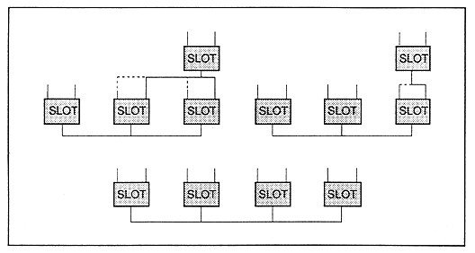
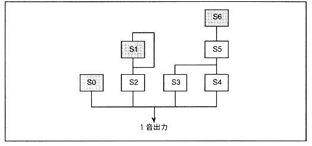

∙ In the FM speech synthesis, there is nothing connected to the top slot if there is no self-feedback. In such a case, set the value from “0B” to “4B” to “MDL” and set the modulation degree to “0”, so that the modulation input can be set to “0”.
* Definition of top slot
The top slot is the top slot of each tower of the algorithm. In Figure 4.49, there are three towers: the S0 tower, the S1 and S2 towers, and the S3, S4, S5, and S6 towers. These top slots are S0, S1, and S6.
Figure 4.49 7-slot FM configuration
